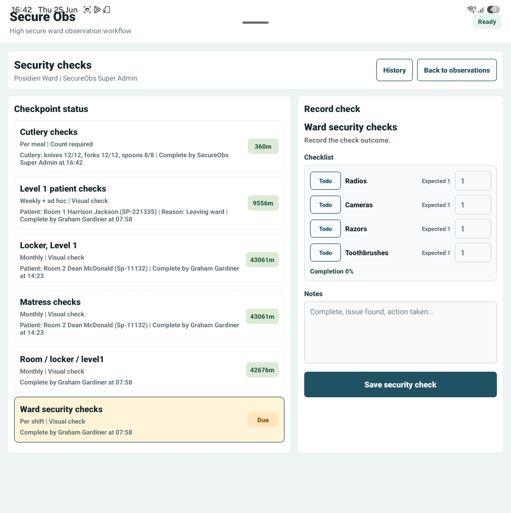

HCF/support staff
Support observations, enhanced observation cover, patient movement checks and factual notes.
SecureObs training
A focused guide for healthcare support workers and security staff completing observations, supporting enhanced observation cover, recording security checks and raising concerns.
Support observations, enhanced observation cover, patient movement checks and factual notes.
Record ward security checks, item counts, variances, and immediate safety concerns.
Use SecureObs to record facts, but tell the nurse in charge immediately when risk changes.
Check that you are on the correct ward and using your own login or NFC tag.
Record only what you have completed or witnessed: patient, location, presentation and factual notes.
Use the agreed observation level and plan of care. If unsure, stop and ask the nurse in charge.
Select the correct checkpoint, enter actual counts and record variances without guessing.
Record safety concerns, injuries or follow-up actions, but escalate urgent risk verbally straight away.
Item counts, room checks and ward checks should reflect what has actually been checked. Variances are not failures — they are information the team needs quickly.

Use the Word manual for HCF, support worker and security staff training.